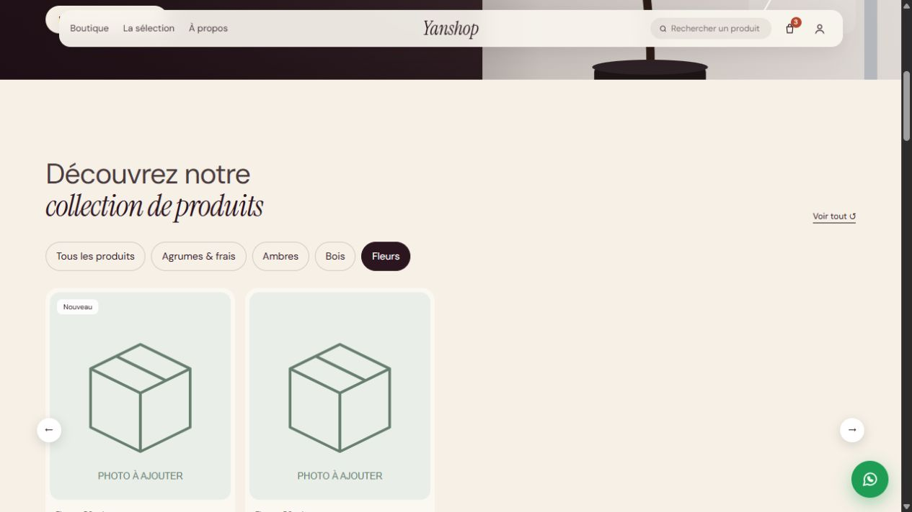
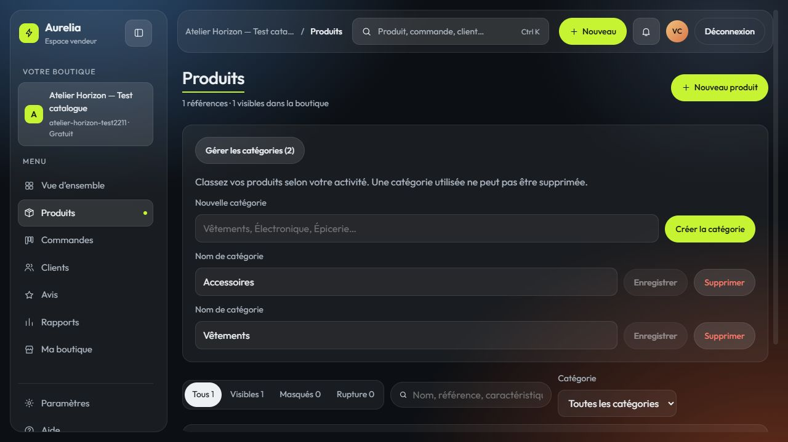
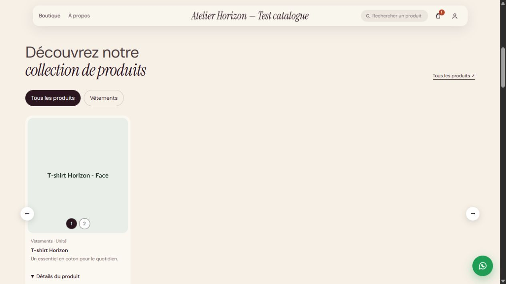
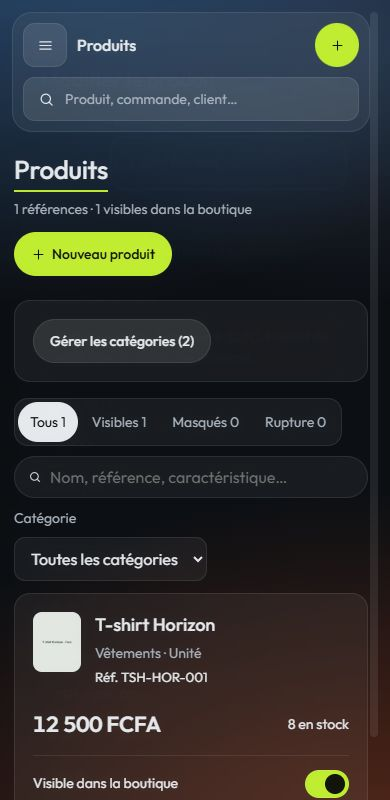

Catalogue universel — Lot 1
22 novembre 2026 · Branche feature/catalogue-universel-lot-1.
Fonctionnement livré
- Catalogue de produits physiques : nom, descriptions courte et détaillée, prix, promotion, stock et référence facultative unique par boutique.
- Catégories propres à chaque vendeur : création depuis la fiche produit ou le catalogue, renommage et suppression uniquement si aucun produit ne les utilise.
- Format ou dimensions et jusqu’à 20 caractéristiques libres : matière, marque, poids, etc.
- Galerie ordonnée de 8 photos maximum par liens HTTPS ; ajout, retrait et changement de photo principale. Sélection de photo et détails accessibles sur le catalogue public.
- Visuel neutre sans photo, filtres par catégorie et recherche par nom, référence ou caractéristique.
- Dashboard, boutique publique et vitrine utilisent un vocabulaire produit. Rapports regroupés par catégorie, avec liens historiques par famille acceptés.
- Concept conservé : compte vendeur, dashboard privé, lien de boutique et demande de commande via WhatsApp.
Le téléversement de fichiers, les variantes et la personnalisation avancée sont hors de ce lot. Les photos de l’exemple T-shirt sont des visuels de test.
Données de Yanshop préservées
Sauvegarde complète PostgreSQL avant migration : .local/backups/catalogue-universel-2026-11-22/aurelia-avant-lot1.dump. Elle contient des données privées et reste exclue de Git.
| Données existantes | Avant / après migration |
|---|
| Produits | 8 / 8 |
| Clients | 1 / 1 |
| Commandes et lignes | 1 commande et 1 ligne conservées |
| Identifiants, noms, prix, stocks, visibilité, promotions et dates | Champs historiques inchangés |
Les 4 familles existantes deviennent les catégories Fleurs, Bois, Ambres et Agrumes & frais. Les notes sont reprises comme caractéristiques ; les contenances restent dans le format. Bergamote Secrète reste masquée ; Jasmin Blanc reste épuisé. La visite du site peut ajouter des événements de consultation sans changer les données historiques.
Résultat de la comparaison des données.

Validation
npm test : 31 tests réussis, incluant une migration sur un schéma historique avec conservation des champs.npm run test:catalogue:postgres : 9 tests réussis sur PostgreSQL natif : catégories, galeries, validations, transactions, isolation SQL et API, commandes et rapport par catégorie.npm run test:postgres : 17 contrôles réussis sur le parcours SaaS existant.npm run build : compilation des deux interfaces réussie.- Navigateur : inscription de la boutique de test Atelier Horizon, création de Vêtements et Accessoires, création d’un T-shirt à 12 500 FCFA avec référence, caractéristique et deux photos ; deuxième photo chargée, détails et ajout au panier vérifiés.
- Yanshop public : 7 produits visibles, catégorie Fleurs avec Rose de Minuit et Jasmin Blanc ; aucun affichage de Bergamote Secrète.
- Formulaire mobile : 390 et 320 pixels, sans débordement horizontal de page ni du dialogue.
La suite embarquée avait dépassé son délai lors d’une exécution simultanée de plusieurs moteurs WASM. Les tests sont désormais séquentiels et le délai d’initialisation du test de persistance Windows est de 90 secondes ; le passage complet a réussi.



Migration et exploitation
npm run db:migrate applique la migration 003 une seule fois. Elle ajoute categories, product_images et les champs génériques ; elle conserve les anciennes colonnes pour compatibilité. Les nouvelles tables ont la RLS forcée et les associations produit/catégorie/photo vérifient aussi la boutique par clés étrangères composites. Les rôles applicatifs générés par l’installation locale reçoivent les droits nécessaires, sans privilège de contournement RLS.
La migration modifie la base indépendamment de la branche Git. Pour un retour complet à l’état précédent, arrêter l’application et restaurer la sauvegarde dans une base distincte avec le compte propriétaire, vérifier les données, puis reconfigurer l’application. Ne pas supprimer la base courante pour effectuer un essai de restauration.
Yanshop · Boutique de validation · Dashboard